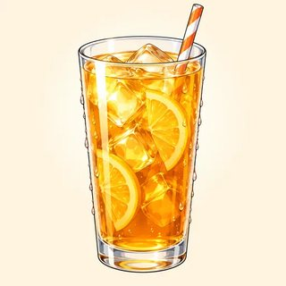

Telling Stories — Classroom Materials
Everything to print for Classes C14–C16: picture flashcards, the Alibi Game (mysteries, planning sheets, detective questions), two picture stories for sequencing and retelling, "Something happened!" story cards, Then & Now character cards, the teacher's listening scripts, and the Story Road board game.
What to Print
| Set | What | How many | Used in |
|---|---|---|---|
| A | Flashcards (actions in progress, story events, then & now) | 1 set for the board | C14, C15, C16 |
| B | Alibi Game: mystery cards, suspect planning sheet, detective question cards, detective notes | 1 mystery + 2 planning sheets + 1 question set + 2 notes per group of 4 | C14 (C15 warmer) |
| C | Picture-story cards: Story A (8) and Story B (6) | 1 set of each per group of 3 | C15 |
| D | "Something happened!" story cards (3 A/B pairs) | 1 pair per 2 learners | C15 |
| E | Then & Now character cards (3 A/B pairs) | 1–2 sets, on a side table | C16 |
| F | Listening & dictation scripts | Teacher only | C14, C15, C16 |
| G | Story Road (board game) | 1 board per group of 3–4 + a die + counters | C16 (or C17 warmer) |
A · Picture Flashcards — Actions in Progress (5.1)
Hold up a card and say a subject: "They…" → "They were dancing." Use them for the substitution drill and on the table during the Alibi Game.




A · Flashcards — Story Events (5.2)
These are the "dots": short, sudden events in the past simple. Pair them with a Set A action card for instant drills: 📺 + 📱 → "I was watching TV when the phone rang."


A · Flashcards — Then & Now (5.3)
Show two cards side by side for the "used to…, but now…" drill: 🚌 + 🚗 → "I used to take the bus, but now I drive."


B · The Alibi Game — Mystery Cards (5.1)
One mystery per group of 4 (2 suspects, 2 detectives). Read the first one aloud to the whole class with a dramatic voice. Use the others for the role swap or the C15 warmer. It's always a silly mystery and an invented evening. Anyone may choose to be a detective instead of a suspect.
🎂 The Missing Birthday Cake
Last night, between 7 and 9 p.m., someone ate the birthday cake in the school kitchen. Only crumbs!
The two suspects say: "We were together all evening. We didn't eat the cake!"
Detectives: check the times 7:00 · 7:30 · 8:00 · 8:30 · 9:00.
🎤 The Midnight Singer
Last night, around midnight, someone was singing very loudly in the hallway of our building. Nobody could sleep!
The two suspects say: "We were together all night. We weren't singing!"
Detectives: check the times 11:00 · 11:30 · 12:00 · 12:30 · 1:00.
🍕 The Pizza Mystery
Yesterday, between 12 and 2 p.m., someone took three pizzas from the office party. The boss is very hungry!
The two suspects say: "We were together the whole time. We were working!"
Detectives: check the times 12:00 · 12:30 · 1:00 · 1:30 · 2:00.
❓ The ______ Mystery
Stretch groups invent their own silly mystery: a missing class hamster, a green car, a lost sandwich…
Write it here:
B · Suspect Planning Sheet (2 per group)
Suspects: plan your evening together. You have 5 minutes. Remember the details! The detectives will ask you alone. Use We were…ing.
| Time | Where were we? | What were we doing? | Details: food, drinks, weather, TV, music, clothes |
|---|---|---|---|
| ____ | |||
| ____ | |||
| ____ | |||
| ____ | |||
| ____ |
Example: 8:00 · at my apartment · We were watching a soccer game. · We were eating popcorn. It was raining. My friend was wearing a red sweater.
Stretch: add one sentence with while: "While we were eating, the neighbor was playing music."
B · Detective Question Cards (1 set per group)
Cut out. Detectives choose 6–8 cards and write the questions on their notes. Ask Suspect 1, then Suspect 2, the same questions.
B · Detective Notes (2 per group)
| Our question | Suspect 1 said… | Suspect 2 said… | Same? ✓ / ✗ |
|---|---|---|---|
3 or more ✗ = "You ate the cake!" Tell the class: "At eight, Ana said they were watching TV, but Omar said they were eating pizza!"
C · Picture Story A — "Lena's Rainy Saturday" (5.2)
One set per group of three. Cut, shuffle, and hand out picture-up. Groups put the cards in order while you read Script 5.2-A, writing 1–8 in the small box in pencil. Then they retell the story, one card each, with when and while. The cards show verb cues only, so learners must build the sentences themselves.


Order (for your monitoring): 1 park · 2 bench / read · 3 start to rain · 4 run · 5 bus stop · 6 Marco · 7 coffee · 8 sun again.
C · Picture Story B — "Omar's Kitchen" (stretch · no script)
For fast groups. There is no script: groups agree the order by logic, then tell the story with when, while, suddenly and in the end.


Most logical order: 1 cook pasta · 2 phone ring · 3 sofa · 4 smoke · 5 run to the kitchen · 6 pizza. (Accept sofa before phone if the group explains it.)
D · "Something Happened!" Story Cards (5.2)
For learners who don't want to tell a true story, or can't think of one. Give a pair the matching A and B cards. A tells A's story in the first person ("I was…") and invents the ending; B listens, reacts, and asks the two questions. Then swap. Learners may change any detail.
🛒 At the supermarket
Scene: you / shop · music / play · it / very busy
Event: you / carry eggs when a child / run into you!
Then: the eggs / fall … The end: invent it!
When B tells: say "Oh no!" · ask "What were you doing when…?" and "And then what happened?"
🚌 On the bus
Scene: you / go to work · you / very tired · the bus / warm
Event: you / sleep when the bus / stop at the last stop!
Then: you / wake up … The end: invent it!
When A tells: say "Really?" · ask "What were you carrying?" and "And then what happened?"
📦 At work
Scene: you / carry boxes · your boss / talk on the phone
Event: while you / work, the lights / go out!
Then: you / drop the boxes … The end: invent it!
When B tells: say "That's so funny!" · ask "What were you singing?" and "Who was at the door?"
🚿 At home
Scene: you / take a shower · you / sing loudly
Event: while you / sing, someone / knock at the door!
Then: you / run to the door … The end: invent it!
When A tells: say "Oh no! Are you OK?" · ask "What was your boss doing?" and "And then what happened?"
🌳 In the park
Scene: you / walk · children / play soccer · the sun / shine
Event: you / eat an ice cream when a ball / hit it!
Then: the ice cream / fall … The end: invent it!
When B tells: say "No way!" · ask "What were you wearing?" and "What did your friend say?"
🎉 At a party
Scene: you / dance · everyone / sing · the music / play loudly
Event: while you / dance, you / see an old friend from school!
Then: you / say hello … The end: invent it!
When A tells: say "Oh no!" · ask "What were the children doing?" and "And then what happened?"
E · Then & Now Character Cards (5.3)
Keep these on a side table: any learner may take one instead of talking about their own past, with no reason needed. As an information gap: give a pair the matching A and B cards. Each learner is their character, tells "then and now" in 6+ sentences, and answers the partner's "Did you use to…?" questions. Each card lists three questions to ask the partner.
Captain Rosa
 NOW
NOW- I used to be a sailor.
- I used to live on a ship.
- I used to eat fish every day.
- I didn't use to have a phone.
- Now I'm a chef. I live in a small apartment. I have a mobile phone.
Ask your partner: Did you use to play soccer? · …travel a lot? · …read books?
Max Stone
THEN NOW
NOW- I used to be a soccer player.
- I used to train every morning.
- I used to travel a lot.
- I didn't use to read books.
- Now I'm a teacher. I read every evening. I walk to work.
Ask your partner: Did you use to live on a ship? · …eat fish? · …have a phone?
Grandma Lu
THEN NOW
NOW- I used to sing in a band.
- I used to stay up very late.
- I used to wear crazy hats.
- I didn't use to cook.
- Now I hike every weekend. I get up at six. I cook for my family.
Ask your partner: Did you use to work at night? · …drink a lot of coffee? · …exercise?
Leo
THEN NOW
NOW- I used to be a taxi driver.
- I used to work at night.
- I used to drink five coffees a day.
- I didn't use to exercise.
- Now I'm a nurse. I work in a hospital. I drink tea, and I swim twice a week.
Ask your partner: Did you use to sing? · …cook? · …go to bed early?
Dina
 THEN
THEN NOW
NOW- I used to work in a bank.
- I used to wear a suit every day.
- I used to take the bus at 6 a.m.
- I didn't use to have free time.
- Now I have a small flower shop. I wear jeans. I walk to work, and I have time for my garden.
Ask your partner: Did you use to be a mechanic? · …have long hair? · …dance?
Mr. Kim
 THENNOW
THENNOW- I used to be a mechanic.
- I used to have long hair.
- I used to play the guitar in a band.
- I didn't use to dance.
- Now I'm a grandfather. I have short gray hair. I dance salsa every Friday!
Ask your partner: Did you use to work in a bank? · …take the bus? · …have free time?
F · Listening & Dictation Scripts (teacher reads aloud)
Read at a natural but slow speed, with pauses. Read each script twice: once for gist, once to check. Use the weak forms (/wəz/, /wər/, "YOO-stuh") so learners hear real English. The 🔊 buttons in the online lessons give learners extra listening at home.
5.1-A · At eight o'clock last night (Workbook 5.1, Ex 1: match people and pictures)
Answers: 1 d · 2 a · 3 b · 4 c · 5 e · 6 f · g (swimming) extra. Follow-up questions: Were the students studying? (No, they weren't.) Was Mr. Chen watching TV? (No, he wasn't. He was sleeping.)
5.1-B · Dictation (read each sentence 3 times; learners check -ing spelling in pairs)
Spelling to check: taking (drop the e), weren't (apostrophe), While + comma.
5.2-A · Lena's Rainy Saturday (Workbook 5.2, Ex 1 + Set C Story A cards)
Workbook answers: a 7 · b 1 · c 5 · d 8 · e 3 · f 2 · g 6 · h 4. Stretch questions: What was Lena doing when it started to rain? (She was reading.) What were they doing while they talked? (Drinking coffee.)
5.2-B · Dictation (read each sentence 3 times; learners underline the long action)
Long actions: was sleeping · were eating · was running · were you doing. Check the comma in no. 2.
5.3-A · Carmen, then and now (Workbook 5.3, Ex 1: THEN or NOW)
Answers: THEN 1, 2, 3, 6 · NOW 4, 5, 7, 8 · Did her family use to have a TV? No, they didn't.
5.3-B · Dictation (read each sentence 3 times; the -d is the challenge)
You can't hear the -d, so this dictation tests the rule: used in 1 and 4, use in 2 and 3.
G · Game — Story Road (Module 5 review)
Groups of 3–4, one board, one die, a coin or counter for each player. Roll and move. Do the task on the square. The group decides: 👍 OK → stay; 🤔 not yet → the group helps, and you stay anyway. ⭐ squares: do the task and roll again. Play for 10 minutes; the player furthest along the road wins. Personal questions can always be answered as a character or invented.
The road snakes: 1→6 left to right, 7→12 right to left, and so on. Squares 2–15 review C14–C15 and most of squares 16–29 review C16 (24 and 25 bring the past continuous back), so a group that stops early has still reviewed the past continuous. Fixed answers are in the Answer Key (squares 3, 5, 8, 11, 12, 15, 17, 18, 21, 23). Walk around and listen for the three big errors: a missing was/were, a continuous "dot," and didn't used to. If you run out of time in C16, keep the boards for the C17 warmer.